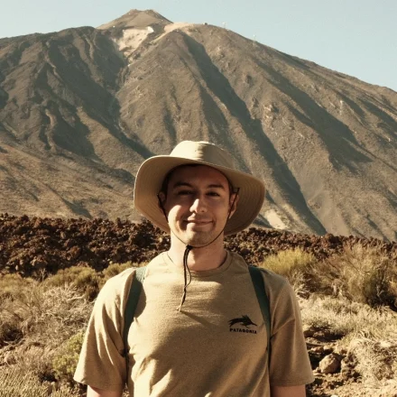
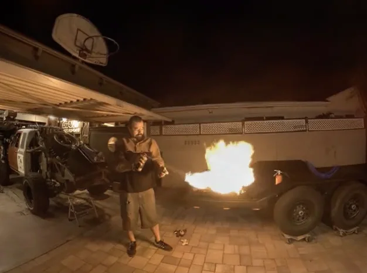
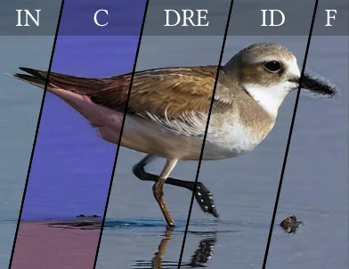
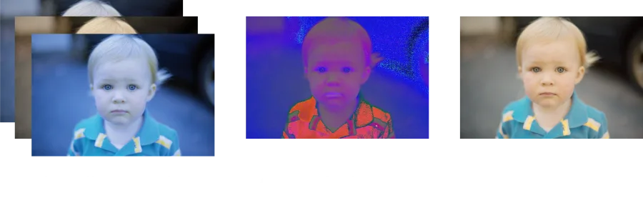
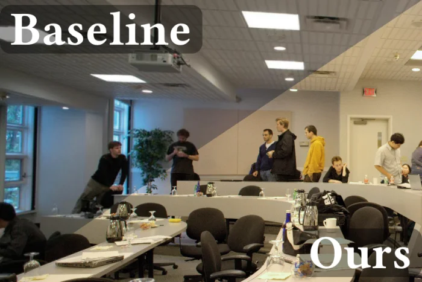
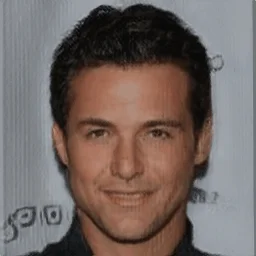

I am a PhD student in the VECG group at University College London (UCL), advised by Assoc. Prof. He Wang and Prof. Tobias Ritschel. My research focuses on computer graphics, particularly advancing neural rendering techniques.
Dec 2025: Gave a talk on my research at Goodenough College.
May 2025: Helped with the organization of Eurographics 2025.
March 2025: Awarded a scholarship by the Rabin Ezra Scholarship Trust to support my research.
October 2024: Started my PhD at UCL!




